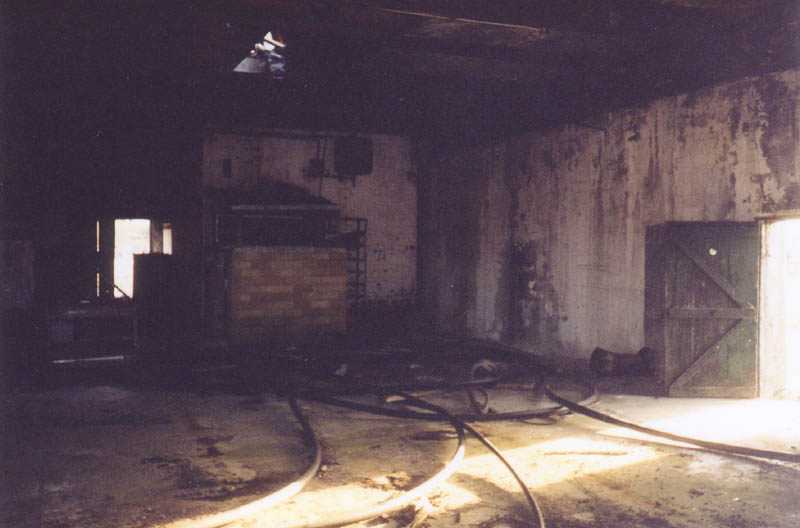
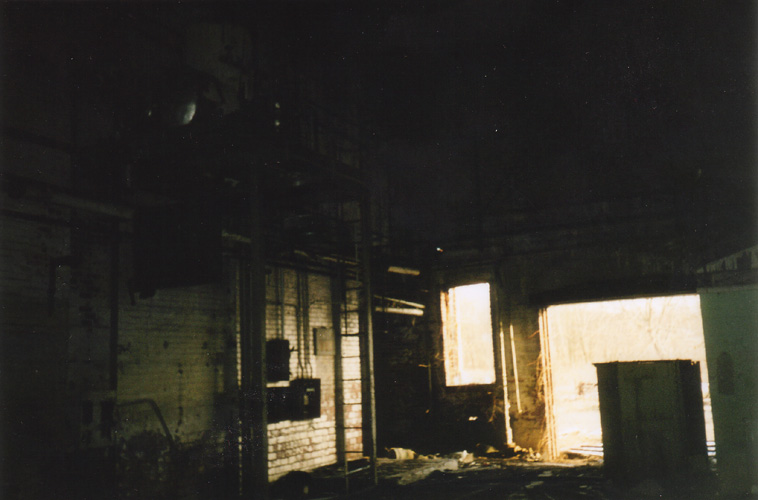
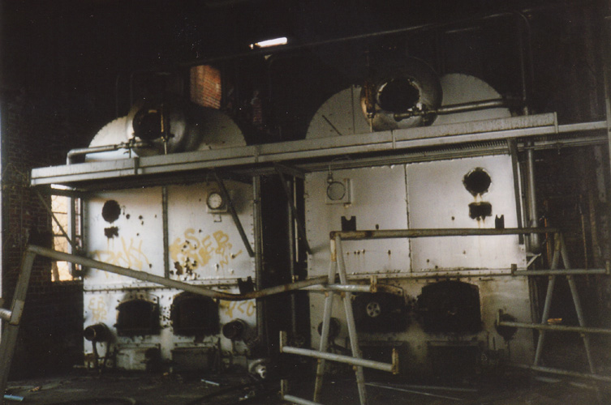

Junction City Prison
Brick Furnaces

Since the Junction City Prison was really only there to make bricks, they were equipped with extensive brick-making facilities. The brick furnaces are housed in a building near the prison which is already in the process of being knocked down. When my girlfriend and I visited it the first time, the front rooms were in their final days. On our first return trip they had demolished the two front sections.


The furnaces were used in Brubaker very briefly. They're just enormous, with heavy round metal doors on the ends. There are even two levels of furnaces; the second level is accessible at the top of a catwalk.

The furnaces are awesome. At the front of the building there's a sort of workroom with workbenches and pegboards--well, there was a work room there, until they knocked it down. When I was first looking for the prison a pickup truck-driving local told me they were getting ready to demolish the whole place and turn it into a lumber yard. You hear imminent demolition stories about just about any place, but who knows?

Back